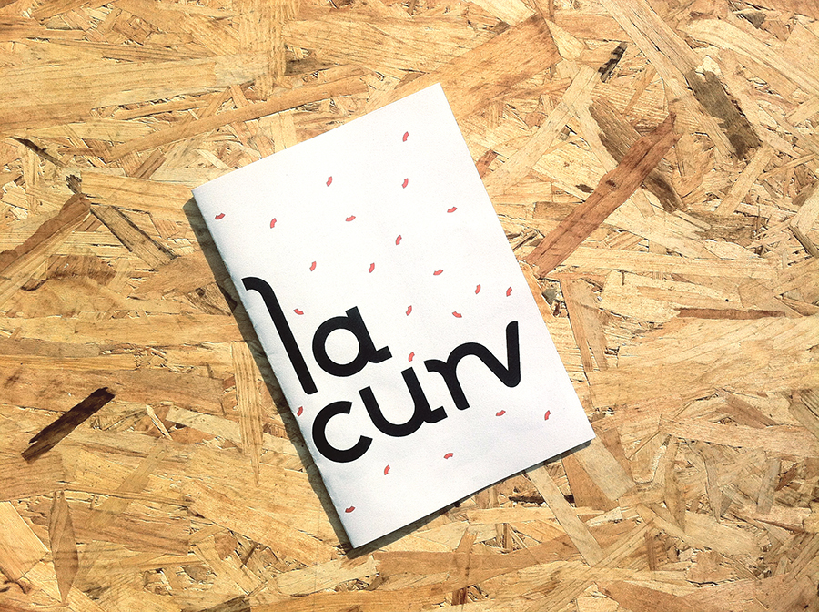
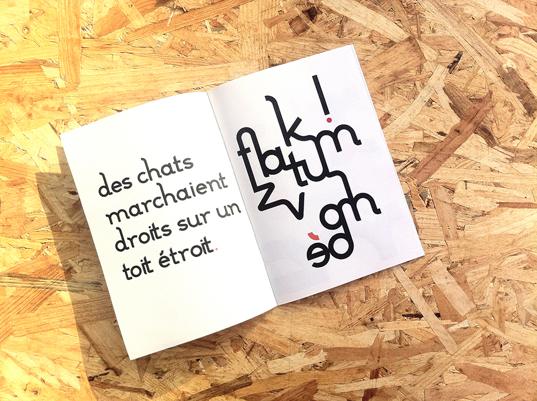
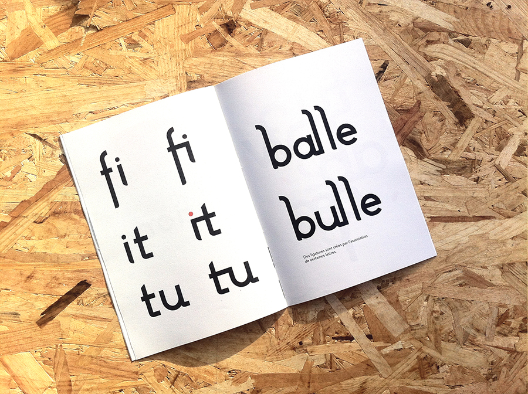
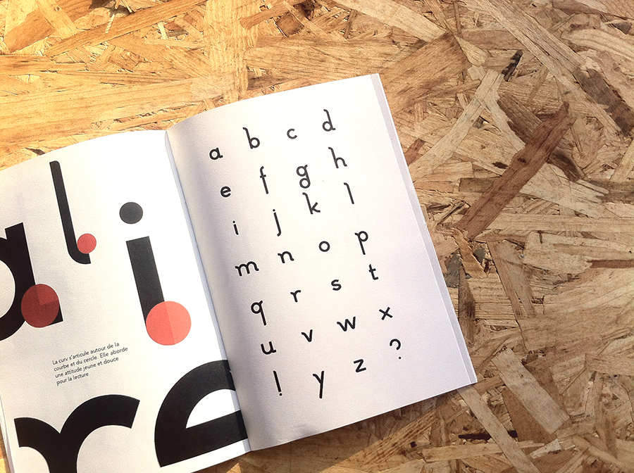
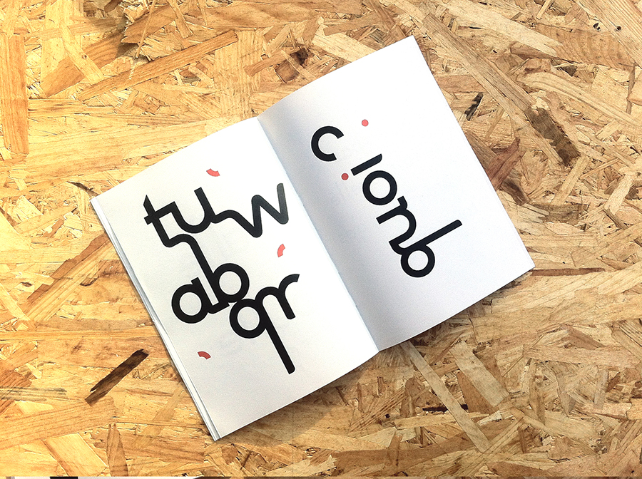
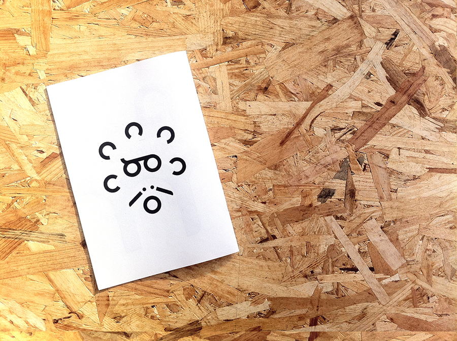

la curv
I made this sans serif font for titles or little sentences like mantras and mottos for example.
It is mainly based on curves. Thanks to them, "curv" have a young, fresh and dynamic look.
Some serif allow the letter to unite with another : ligatures are made.
January, 2017